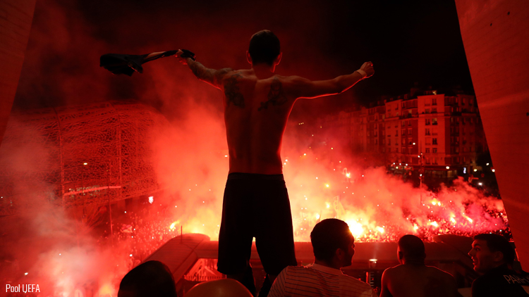

There is a curse above the head of the PSG team in champions league for four years :
We all know the famous disaster of barcelona call "remontada". The psg have won the first match 4-0 with two goals of angel Di Maria, one of draxler and one of cavani. dispite of this incredible match, the PSG team was afraid during the second match and they have lost 6-1 ! It was a terrible disaster for the team and for the supporters.
One year after the previous disaster in Barcelona, we are not lucky and during the draw. We've picked the famous and strong team real madrid. It was two difficult matches for us, we have lost the first one 3-1 and lost the second in the parc des prince 2-1. We was another time eliminated in the round of eight.
In 2019 we was again in round of eight againt Manchester United this time. It was quite a good draw for us beacause manchester united was in trouble at this period. In the first match in the old Trafford stadium the Psg team did a masterclass. Every one was exceptionnal and we won 2-0. But at the second match in the Parc des princes, the curse continue and we have lost 3-1. This élimination was so difficult for the suporters ans the players.
This year our team is better than never, we have a difficult draw because Dortmund is a good team and the curse is above us for 4 years. The first match in the signa iduna Park statium was difficult for us tacticaly and physicaly. We lost 2-1, a good result for a defeat away. we continue to trust in us and keep the faith. Due to covid-19 the second match in Paris was played behind closed doors, a realy bad news for us. Dispite of this decision supporters dicided to come just in front of the stadium in order to sing and support the team! We won 2-0! The night was crazy and the curse is broken we are in round of 4 !
The potentials opponent for the PSG's round of 4 are :